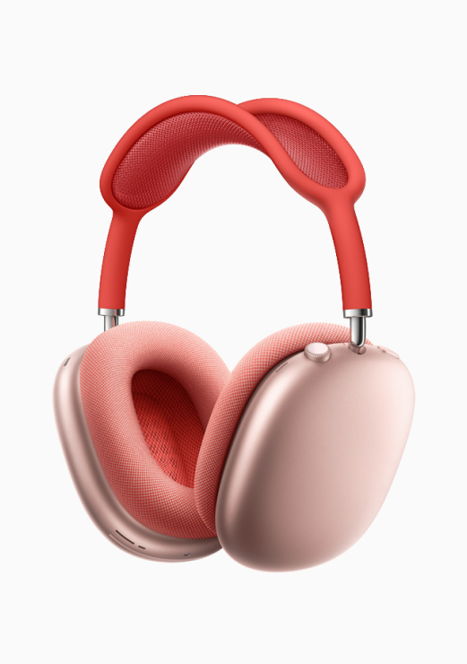
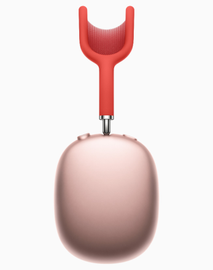

AirPods Max combine a custom acoustic design, H1 chips, and advanced software to power computational audio for a breakthrough listening experience with Adaptive EQ, Active Noise Cancellation, Transparency mode, and spatial audio.
AirPods Max
